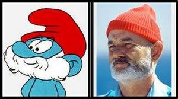

Papá Pitufo
 De: La Frikipedia, la enciclopedia extremadamente seria.
De: La Frikipedia, la enciclopedia extremadamente seria.
Papá Pitufo, anteriormente conocido como El Gran Pitufo, es el macho dominante en la aldea de los pitufos. Entre sus principales aficiones se encuentran pitufar, elaborar pociones, dar consejos... Pero su afición más importante es el fútbol. Como puede apreciarse por su vestimenta roja y azul, es socio del F.C. Barcelona. Existe la creencia popular, de que es la reencarnación de Lenin y que ha venido al mundo para extender el comunismo
Vida de Papá Pitufo
 Se observa cómo Chanquete y Papá Pitufo son en realidad la misma persona
Nació un 23 de octubre allá por el año 36 d.F. (después de Manuel Fraga) y murió en el año 59 d.F. Es de sobra conocida su muerte, debido a su retransmisión en una serie de televisión española denominada Verano Azul (en el que utilizaba el seudónimo de Chanquete).
Desde su juventud partipó activamente en la vida política de la aldea, hasta que mediante un pronunciamiento militar, dio un golpe de estado por el cual se convertiría en el nuevo gobernante de la aldea, anteriormente controlada por los Estados Unidos.
A la edad de veinticinco(por el culo te la hinco) años, comenzó a trabajar en el Polo Norte, para la empresa Regalos de Navidad S.A.(Santa clAus). Durante varios años trabajó para Papá Noel alias PN (intenta decir PN varias veses bien rapido) (que, al igual que Papá Pitufo, no era papá, en contra de la creencia generalizada), y al dejar el empleo, decidió comenzar a vestir de rojo, no en honor de Santa Claus, sino de la nariz de Rudolf.
Su ideales comunistas le llevarón a entablar una amistad cercana con el Pato Donald, mientras que sus ambiciones imperialistas (para las cuales usaba a los Pitufos) le llevarón a conocer a Beakman
Datos Curiosos de la vida de Papá Pitufo
- Antaño, los pitufos no tenían casas; fue Papá Pitufo quien, por su adicción oculta a las setas, plantó todo un claro del bosque de una extraña variedad de setas gigantes. Papá Pitufo se comió una de estas setas enteras, pero otro pitufo le vio y llamó a los demás, que imitaron su gesto e ingirieron cada uno, una de aquellas descomunales setas. Fue en este momento cuando los pitufos adquirieron su característico color azul, y también a partir de ese momento no pudieron probar más las setas, por lo que las que quedaron, las utilizaron como viviendas.
- Papá Pitufo, realmente no era papá de nadie. En la aldea todos eran varones, incluso Pitufina, que a pesar de su apariencia, tenía pene
- Papá Pitufo, como el resto de los pitufos, y como Tinky Winky, era claramente homosexual.
- Papá Pitufo puede digi-evolucionar en Superman.
- Los fachas, dicen que Papá Pitufo es en realidad Karl Marx disfrazado para explicar el Manifiesto Comunista de forma subliminal, mientras que en su defensa los rojos aseguran que en realidad es Marrano Rajoy que pretende a hacer publicidad del PePe, de ahí que las siglas de Papa Pitufo sean precisamente PP. Pero estas dos creencias son falsas, ya que como se ha explicado y demostrado antes, Papá Pitufo en realidad es Chanquete.
- El Papá Pitufo tiene una barba color nieve y unos panecillos en los pies.
- Papá Pitufo es pastafarista y su barba está hecha de espagueti.
- Como puede apreciarse por su gorro rojo y su camisa azul, Papá Pitufo es miembro de la Falange Española
- Reside actualmente en un bosque de la provincia de Irlanda en Bilbao
- Papá Pitufo compitió contra el Profesor Xavier y contra el Profesor Frink por el Premio Nobel de la Ciencia hace varios años, fue otorgado finalmente al profesor Frink gracias a su maravilloso invento, el destornillador con martillo incorporado.
Autor(es):
- Nexo
- Doctor grijander
- Amras89
- Roms
- Diegocon13
- Mel-o
- Kanginar
- Covarde aninimo
- Evidence nobbe
Frikipedia 2005-2016, Licencia
GFDL 1.2 - Extraído por FrikiLeaks